Modelo
Editorial, belleza y contenido de marca.
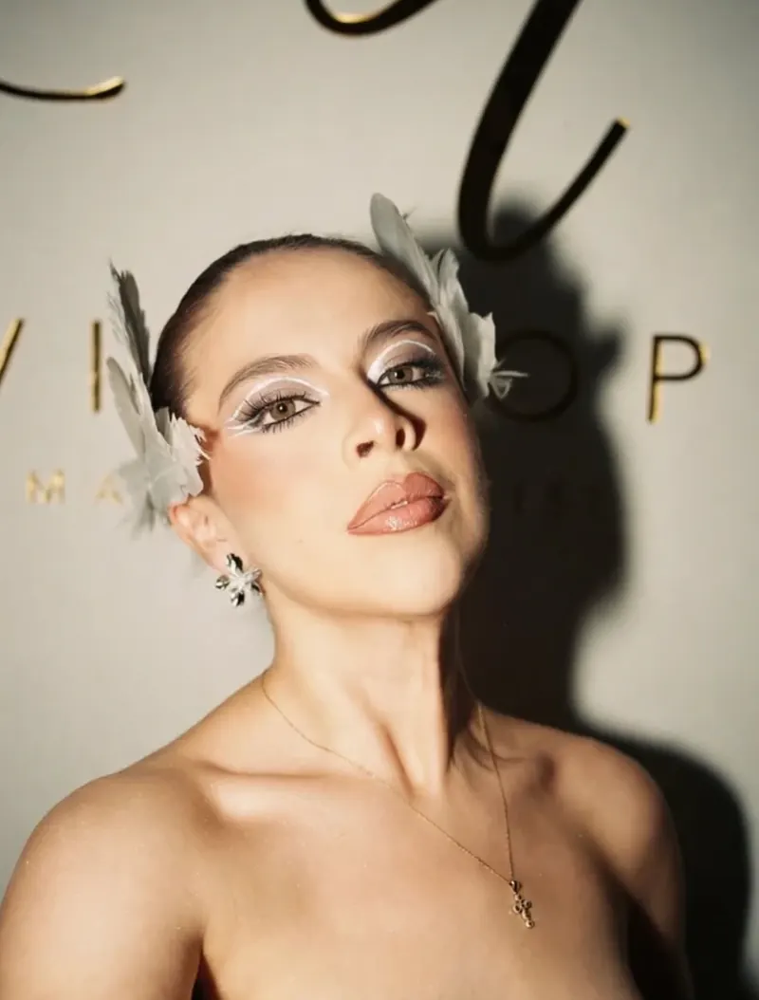
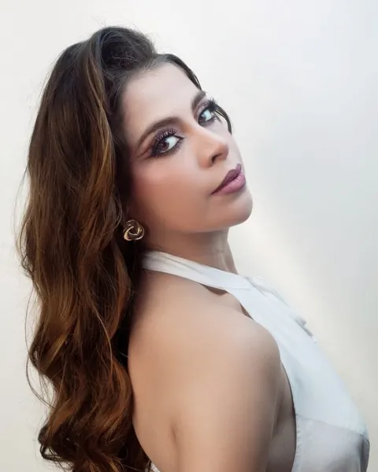
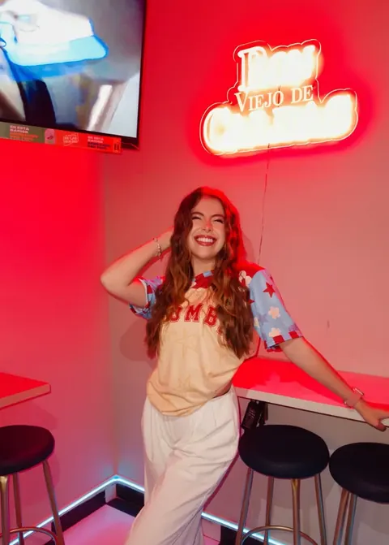
Content & Marketing Strategist Modelo Pasto, Nariño
¿Tu marca está aburrida y sin alma? Yo te ayudo.
Planeo, creo y protagonizo contenido para marcas locales y personales: con estrategia, cuidando su esencia y apuntando a lo que quieren lograr.
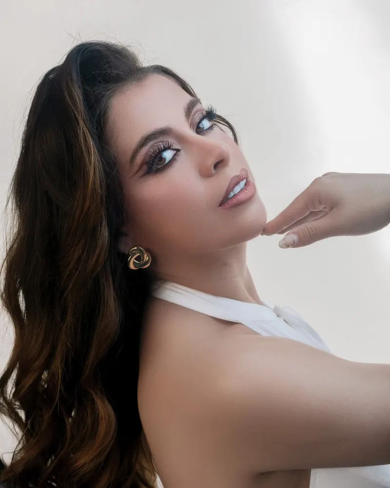
Profesional en Diseño de modas
pero marketera de corazón
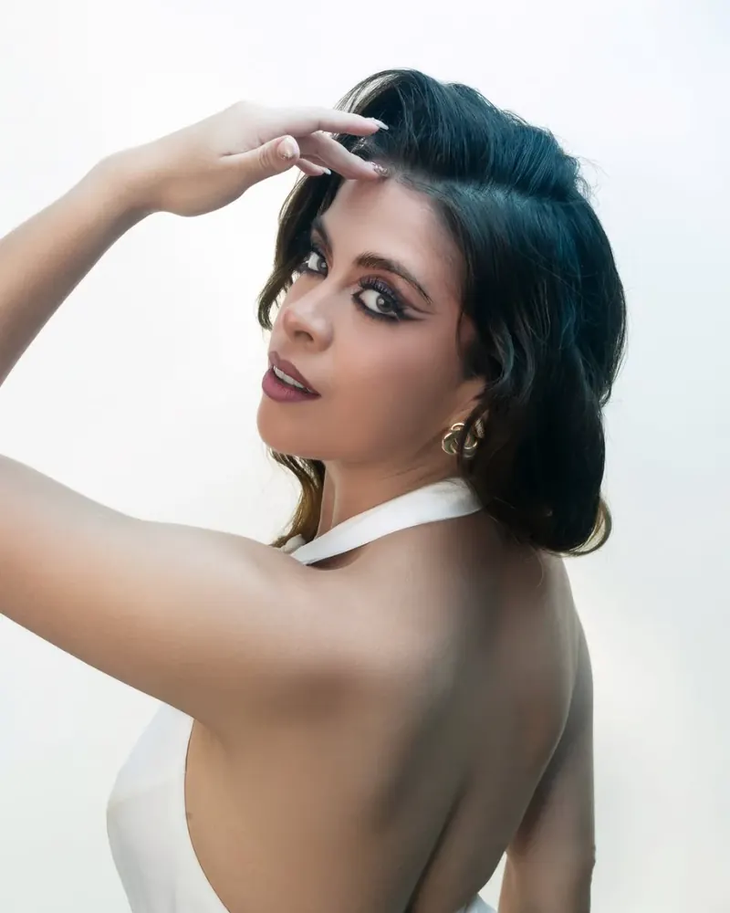
Soy un poco de todo:
Durante 3 años he creado para marcas locales y personales de Pasto, con una estrategia detrás, preservando su esencia y persiguiendo los objetivos que quieren alcanzar.
La misma que planea tu estrategia sabe pararse frente a la cámara y sobre un escenario.
Editorial, belleza y contenido de marca.



Coronada para representar a Nariño en el Reinado Nacional del Bambuco.
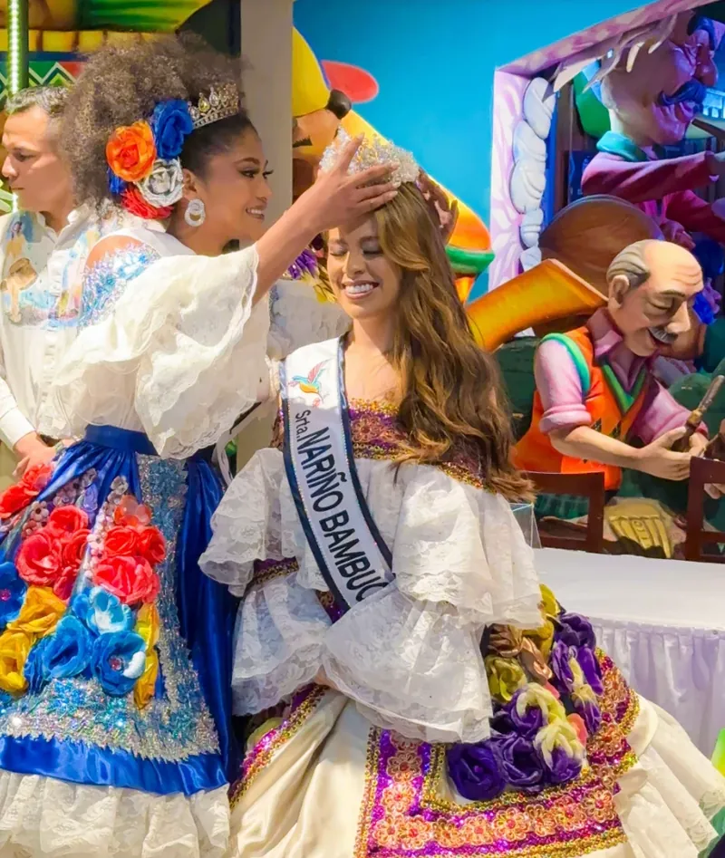
En comparsa, en la calle y frente a las carrozas de Pasto.
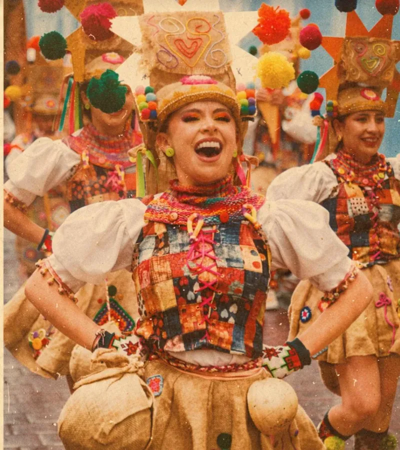
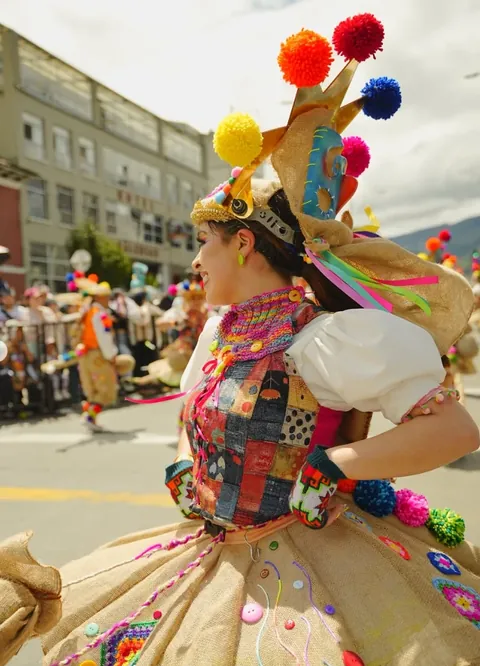
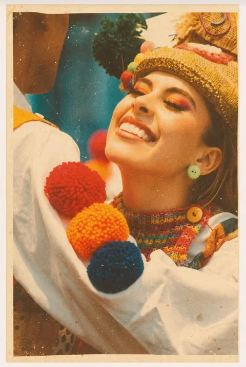
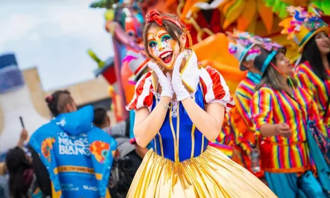
Pienso la estrategia, produzco el contenido y lo pongo a circular: comunicación, campañas y publicidad con una idea detrás.
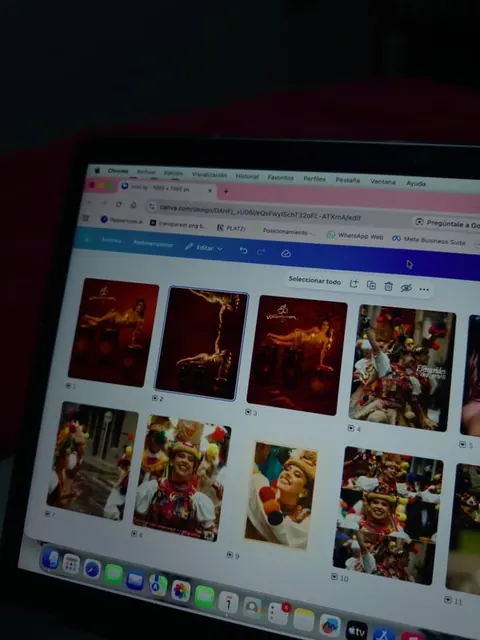
Diagnóstico de tu marca y tus redes, público, tono de voz, pilares de contenido y plan de comunicación.
Ideal paramarcas que publican sin rumbo o se van a relanzar.
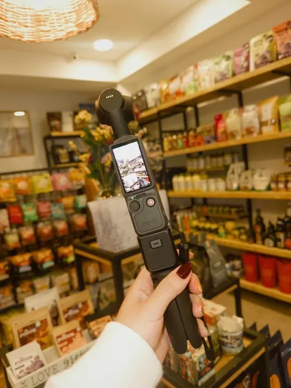
Ideas, guiones, foto y video para reels y TikTok, dirección y edición. Si hace falta, yo soy la cara del contenido.
Ideal paramarcas que necesitan contenido constante y bien hecho.
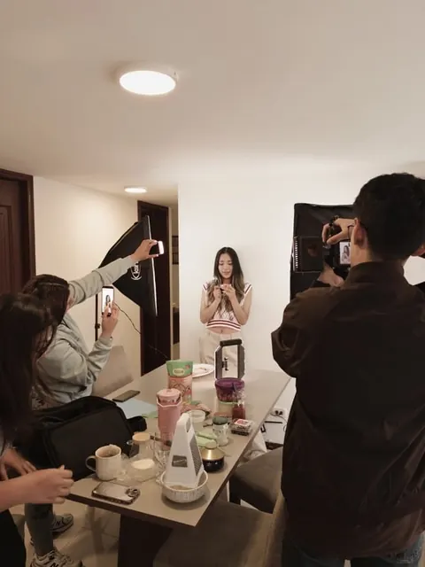
Parrilla de contenidos, publicación, comunidad y seguimiento de lo que funciona.
Ideal paranegocios que no tienen tiempo para sus redes.
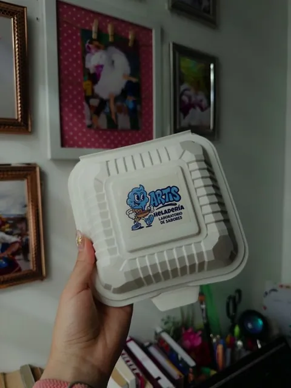
Concepto creativo, plan de lanzamiento, activaciones y eventos, y cubrimiento en vivo.
Ideal paraproductos nuevos, aperturas y temporadas.
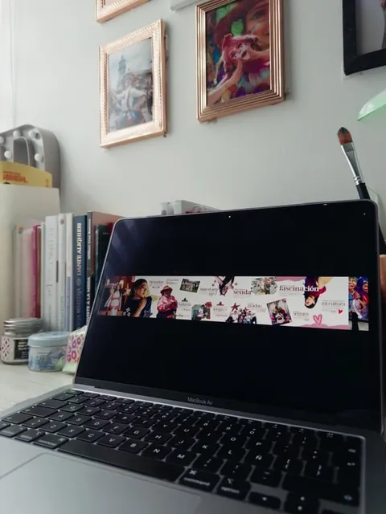
Planeación digital de tus canales, contenido para web y redes, medición y reportes para decidir con datos.
Ideal paramarcas que quieren crecer con orden en lo digital.
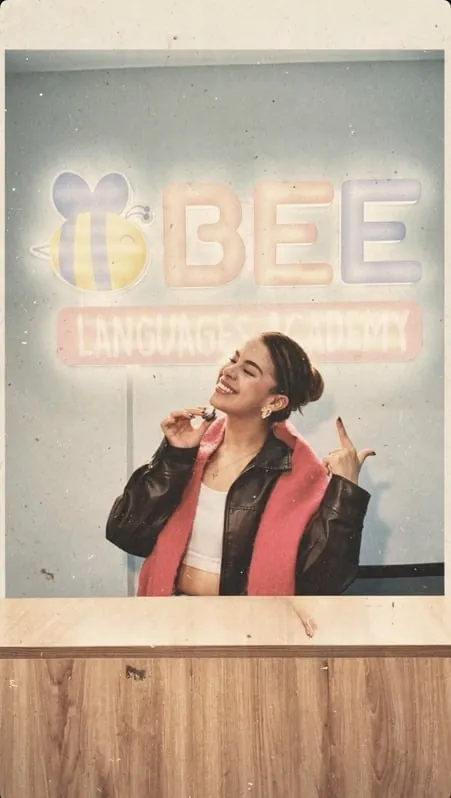
Pauta en Instagram y Facebook, segmentación, optimización de anuncios y posicionamiento en buscadores.
Ideal paramarcas que quieren llegar a más gente invirtiendo bien.
Por WhatsApp me cuentas de tu marca y qué quieres lograr.
Miramos juntos tu marca y tus redes, y encontramos qué le falta.
Te propongo una estrategia a tu medida, con lo que tu marca necesita.
Producimos, publicamos y ajustamos con lo que funciona.
También soy creadora UGC: videos naturales con tu producto, listos para tus redes o tus anuncios. Ver mis videos UGC
¿Indecis@? Escríbeme y lo charlamos
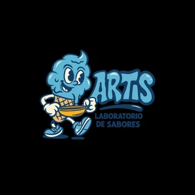
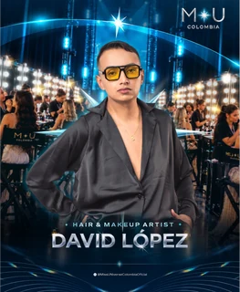
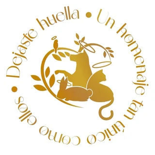
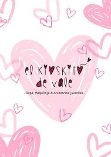
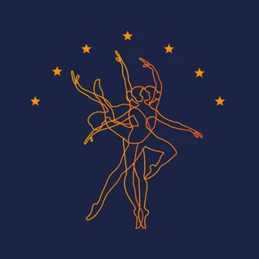
Videos UGC de muestra que he creado con productos de estas marcas. Toca una y mira el video.
Moda, innovación digital y marketing: lo que hay detrás de cada estrategia.
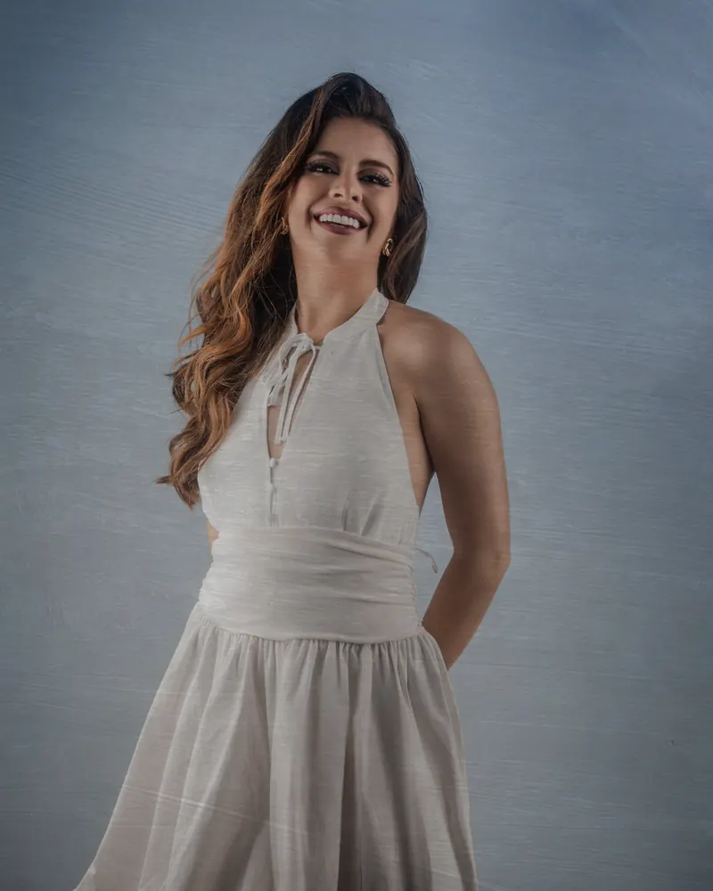